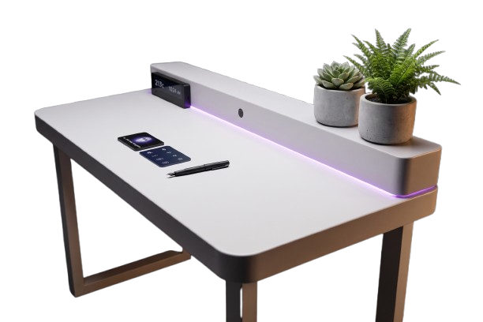
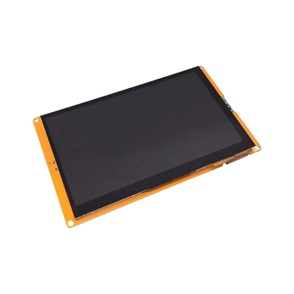
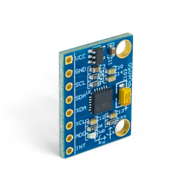
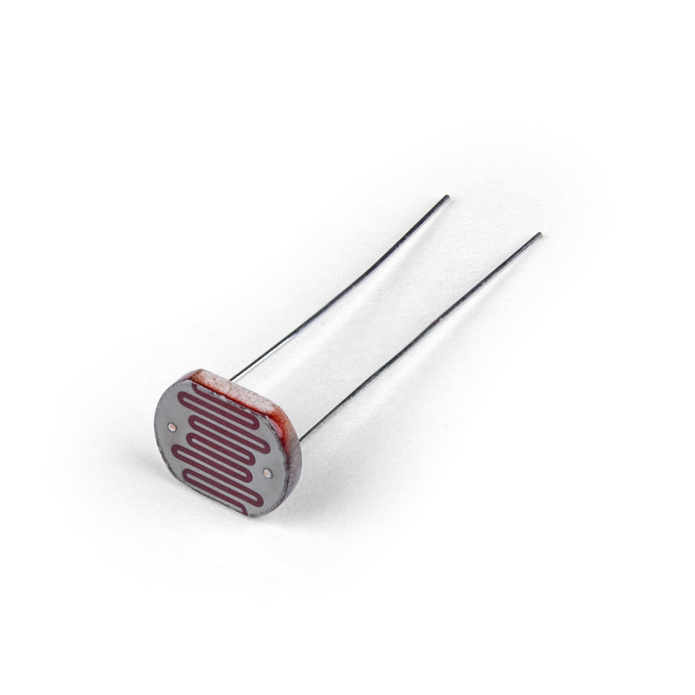
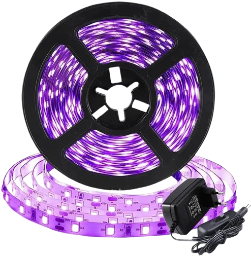

Performance que você sente. Literalmente.
A MILA não é apenas uma mesa. O topo dela é equipado com uma tela tátil e um visor de LED que exibe temperatura, hora e mensagens importantes da IA, transformando o espaço em um ambiente inteligente.
Qual é o resultado?
O foco absoluto e o ganho de produtividade sustentável!

Um tutor pessoal. Movido por IA.
A MILA possui recursos avançados de uma interface interativa integrada:
- Respostas imediatas: Tire dúvidas, crie lembretes ou revise enquanto estuda diretamente com o tutor virtual.
- Gestão de progresso: O sistema monitora sua evolução e o seu ritmo dia após dia, garantindo foco contínuo.
- Biofeedback: Acessa recomendações de pausas com base no tempo que você passa focado e na postura observada.
Hardware de Precisão. Design com Propósito.
Cada componente da MILA foi selecionado para otimizar a sua jornada de aprendizado e definição.






A ciência que fundamenta o foco.
A MILA se consulta sobre planos científicos sólidos, monitorando a fadiga cognitiva e o declínio da concentração.
Análise Postural
Usa o monitoramento de sensores de pressão e IMU para alertar quando a postura correta está sendo comprometida.
Sincronia de Iluminação
Luzes inteligentes ajustam o ambiente para garantir conforto visual e eliminar a fadiga durante o estudo prolongado.
O futuro do aprendizado. Hoje.
Resultado final: Uma plataforma de estado da arte.
A MILA transforma seu ambiente em um hub de alta performance, unindo ergonomia, monitoramento de comportamento e IA. A solução definitiva para quem busca aprender mais, cansando menos.